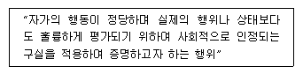
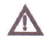
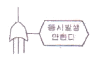
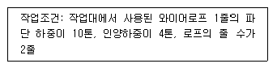
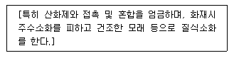
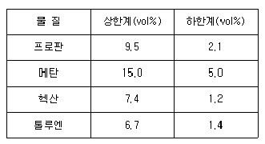
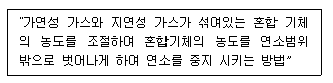

산업안전산업기사 (2011-03-20 기출문제)
1과목: 산업안전관리론
1. 의무안전인증 대상 보호구 중 안전모의시험성능기준의 항목이 아닌 것은?
- 충격흡수성
- 발수성
- 내전압성
- 턱끈풀림
(정답률: 71%)

2. 위험예지훈련 4R 방식 중 각 라운드(Round)별 내용이 올바르게 연결된 것은?
- 1R - 목표설정
- 2R - 본질추구
- 3R - 현상파악
- 4R - 대책수립
(정답률: 87%)
3. 적응기제(adjustment mechanism) 중 다음 설명에 해당하는 것은?

- 보상
- 합리화
- 동일시
- 승화
(정답률: 72%)
4. 다음 중 재해발생의 원인에 있어 불안전한 상태에 해당하지 않는 것은?(오류 신고가 접수된 문제입니다. 반드시 정답과 해설을 확인하시기 바랍니다.)
- 설비 및 장비의 결함
- 부적절한 조명 및 환기
- 작업장소의 정리∙정리 불량
- 보호구 착용 불량
(정답률: 73%)
5. 다음 중 기능교육의 3원칙에 해당하지 않는 것은?
- 준비
- 안전의식 고취
- 위험작업의 규제
- 안전작업 표준화
(정답률: 48%)
6. 다음 중 리더가 가지고 있는 세력의 유형이 아닌 것은?
- 보상세력(reward power)
- 합법세력(legitimate power)
- 전문세력(expert power)
- 위임세력(entrust power)
(정답률: 72%)
7. 다음 중 산업안전보건법상 안전보건관리규정에 반드시 포함되어야 할 내용이 아닌 것은?
- 안전∙보건교육에 관한 사항
- 생산성과 품질향상에 관한 사항
- 작업장 안전관리에 관한 사항
- 안전∙보건 관리조직과 그 직무에 관한 사항
(정답률: 86%)
8. 객관적인 위험을 자기 나름대로 판정해서 의지결정을 하고 행동에 옮기는 인간의 심리특성을 무엇이라고 하는가?
- 셰이프 테이킹(safe taking)
- 액션 테이킹(action taking)
- 리스크 테이킹(risk taking)
- 휴면 테이킹(human taking)
(정답률: 77%)
9. 산업안전보건법상 사업 내 안전∙보건교육 중 채용시의 교육 및 작업내용 변경시의 교육 내용에 해당하는 것은?
- 물질안전보건자료에 관한 사항
- 건강증진 및 질병 예방에 관한 사항
- 유해∙위험 작업환경 관리에 관한 사항
- 표준안전작업방법 및 지도 요령에 관한 사항
(정답률: 61%)
10. 다음 중 교육과제에 정통한 전문가 4~5명이 피교육자 앞에서 자유로이 토의를 실시한 다음에 피교육자 전원이 참가하여 사회자의 사회에 따라 토의하는 방식을 무엇이라 하는가?
- 포럼(forum)
- 패널 디스커션(panel discussion)
- 심포지엄(symposium)
- 버즈 세션 (buzz session)
(정답률: 70%)
11. 다음 중 Super D.E 의 역할이론에 포함되지 않는 것은?
- 역할 갈등
- 역할 기대
- 역할 조성
- 역할 유지
(정답률: 46%)
12. 산업안전보건법상 안전 ∙ 보건표지 중 “인화성물질경고”에 해당하는 것은?

(정답률: 91%)
13. A 사업장의 도수율이 10이고, 강도율이 1.7 이라고 하면 이 사업장의 종합재해지수(FSI)는 약 얼마인가?
- 2.74
- 3.74
- 3.87
- 4.12
(정답률: 60%)
14. 다음 중 재해사례연구에 관한 설명으로 틀린 것은?
- 재해사례연구는 주관적이며 정확성이 있어야 한다.
- 문제점과 재해요인의 분석은 과학적이고, 신뢰성이 있어야 한다.
- 재해사례를 과제로 하여 그 사고와 배경을 체계적으로 파악한다.
- 재해 요인을 규명하여 분석하고 그에 대한 대책을 세운다.
(정답률: 87%)
15. 다음 중 재해예방의 4원칙으로 틀린 것은?
- 예방 가능의 원칙
- 손실 우연의 원칙
- 원인 계기의 원칙
- 선취 해결의 원칙
(정답률: 79%)
16. 직장에서의 부적응 유형 중 자기 주장이 강하고 빈약한 대인관계를 가지고 있는 성격의 소유자로 사소한 일에 있어서도 타인이 자신을 제외했다고 여겨 악의를 나타내는 인격을 무엇이라 하는가?
- 망상인격
- 분열인격
- 무력인격
- 강박인격
(정답률: 80%)
17. 안전검사 대상 유해∙위험기계 중 크레인의 경우 사업장에 설치가 끝난 날부터 몇 년 이내에 최조 안전검사를 실시하여야 하는가?
- 6개월
- 1년
- 2년
- 3년
(정답률: 54%)
18. 다음 중 적성검사할 때 포함되어야 할 주요 요소로 적절하지 않은 것은?
- IQ 검사
- 형태식별 능력
- 운동속도 및 손작업 능력
- 플리커(flicker) 검사
(정답률: 66%)
19. 동기부여(motivation)에 있어 동기가 가지는 성질을 설명한 것으로 적절하지 않은 것은?
- 행동을 촉발시키는 개인의 힘을 뜻하는 활성화
- 일정한 강도와 방향을 지닌 행동을 유지시키는 지속성
- 개인에게 부여된 목표달성의 정도를 평가하는 합리성
- 노력의 투입을 선택적으로 한 방향으로 지향하도록 하는 통로화
(정답률: 53%)
20. 산업재해에 있어 인명이나 물적 등 일체의 피해가 없는 사고를 무엇이라 하는가?
- Near Accident
- Good Accident
- True Accident
- Original Accident
(정답률: 77%)
2과목: 인간공학 및 시스템안전공학
21. 다음 중 교체 주기와 가장 밀접한 관련성이 있는 보전방식은?
- 보전예방
- 생산보전
- 품질보전
- 예방보전
(정답률: 69%)
22. 다음 중 누적손상장애(CTDs)의 원인으로 거리가 먼 것은?
- 장시간 진동공구의 사용
- 과도한 힘의 사용
- 높은 장소에서의 작업
- 부적절한 자세에서의 작업
(정답률: 84%)
23. 다음 중 FT도에서 컷셋(cut set)에 관한 설명으로 틀린 것은?
- 시스템의 약점을 표현한 것이다.
- 정상 사상(Top event)을 발생시키는 조합이다.
- 시스템이 고정나지 않도록 하는 사상의 조합이다.
- 일반적으로 Fussell Algorithm을 이용한다.
(정답률: 56%)
24. 시스템안전프로그램계획(SSPP)을 이행하는 과정 중 최종 분석단계에서 위험의 결정 인자가 아닌 것은?
- 가능 효율성
- 위험감축
- 피해가능성
- 폭발빈도
(정답률: 44%)
25. 시스템안전의 수명주기에서 생산물의 적합성을 검토하는 단계는?
- 구성단계
- 정의단계
- 생산단계
- 개발단계
(정답률: 44%)
26. 광원의 밝기가 100cd 이고, 10m 떨어진 곡면을 비출 때의 조도는 몇 Lux 인가?
- 1
- 10
- 100
- 1000
(정답률: 58%)
27. 다음 중 아날로그(analog) 표시장치의 선택시 고려해야 할 사항으로 가장 적절한 것은?
- 일반적으로 고정눈금에서 지침이 움직이는 것이 좋다.
- 온도계나 고도계에 사용되는 눈금이나 지침은 수평표시가 바람직하다.
- 눈금의 증가는 시계반대 방향이 적합하다.
- 이동요소의 수동조절이 필요할 때에는 지침보다 눈금을 조절할 수 있어야 한다.
(정답률: 64%)
28. 심장 근육의 활동정도를 측정하는 전기 생리신호로 신체적 작업 부하 평가 등에 사용할 수 있는 것은?
- ECG
- EEG
- EOG
- EMG
(정답률: 50%)
29. 다음 중 인체측정 자료를 응용하고자 할 경우 최대치수 기준으로 적용하기에 적절하지 않은 것은?
- 문의 높이
- 선반의 높이
- 통로의 높이
- 비상구의 높이
(정답률: 79%)
30. 다음 중 체계 설계 과정의 주요 단계에서 가장 먼저 실시해야 하는 것은?
- 기본설계
- 체계의 정의
- 계면설계
- 목표 및 성능 명세 결정
(정답률: 68%)
31. 다음 중 통제비에 관한 설명으로 틀린 것은?
- C/D비 라고도 한다.
- 최적통제비는 이동시간과 조정시간의 교차점이다.
- 매슬로우(Maslow)가 정의 하였다.
- 통제기기와 시각표시 관계를 나타내는 비율이다.
(정답률: 73%)
32. 음압수준이 120dB 인 경우 100Hz에서의 phon 값과 sone 값으로 옳은 것은?
- 100phon, 64sone
- 100phon, 128sone
- 120phon, 128sone
- 120phon, 256sone
(정답률: 47%)
33. 작업자가 앉아서 수작업을 하는 경우 기능을 편히 할 수 있는 공간의 외곽 한계를 무엇이라 하는가?
- 파악한계
- 최대작업역
- 정상작업역
- 접촉한계
(정답률: 52%)
34. 기본사상 ①과②가 OR gate로 연결되어 있는 FT도에서 정상사상(top event)의 발생확률은얼마인가? (단, 기본사상 ①과②의 발생확률은 각각 1×10-3/h, 1.5 × 10-2/h 이다.)
- 0.008
- 0.015985
- 0.07555
- 0.15085
(정답률: 66%)
35. 다음 중 소음에 의한 청력 손실이 가장 잘 발생하는 진동수는?
- 100Hz
- 1000Hz
- 2000Hz
- 4000Hz
(정답률: 68%)
36. 다음 중 안전가치분석의 특징으로 틀린 것은?
- 기능위주로 분석한다.
- 그룹 활동은 전원의 중지를 모은다.
- 특정 위험의 분석을 위주로 한다.
- 왜 비용이 드는가를 분석한다.
(정답률: 53%)
37. 운전자가 직무 수행하지만 틀리게 수행함으로써 발생하는 작위(commission) 실수의 범주에 포함되지 않는 것은?
- 생략착오
- 시간착오
- 순서착오
- 정성적착오
(정답률: 46%)
38. 상대습도가 100%, 온도 21℃ 일 때 실효온도(effectivetemperature)는 얼마인가?
- 10.5℃
- 19℃
- 21℃
- 31.5℃
(정답률: 63%)
39. 다음 중 인간 -기계 체계에 의해 수행되는 기본 기능의 유형이 아닌 것은?
- 감지
- 정보 보관
- 궤환
- 행동
(정답률: 75%)
40. 다음 중 FT도에서 [그림]과 같은 기호의 명칭에 해당하는 것은?

- OR게이트
- 배타적 OR게이트
- 조합 OR게이트
- 우선적 OR게이트
(정답률: 65%)
3과목: 기계위험방지기술
41. 보일러에서 압력제한 스위치의 역할은?
- 최고 사용압력과 상용압력 사이에서 보일러의 버너연소를 차단
- 최고 사용압력과 상용압력 사이에서 급수펌프 작동을 제한
- 최고 사용압력 도달 시 과열된 공기를 대기에 방출하여 압력 조절
- 위험압력 시 버너, 급수펌프 및 고저 수위조절 장치 등을 통제하여 일정압력 유지
(정답률: 53%)
42. 다음 중 근로자에게 위험을 미칠 우려가 있는 공작기계에 덮개, 울 등을 설치해야 하는 경우와 가장 거리가 먼 것은?
- 연삭기 또는 평삭기의 테이블, 형삭기 램 등의 행정 끝
- 선반으로부터 돌출하여 회전하고 있는 가공물 부근
- 톱날 접촉예방장치가 설치된 원형톱(목재가공용 둥근톱 기계 제외) 기계의 위험부위
- 띠톱기계의 위험한 톱날(절단부분 제외)부위
(정답률: 56%)
43. 아세틸렌 용접장치를 사용하여 금속의 용접, 용단 또는 가열 작업 시 아세틸렌의 게이지 압력은 얼마를 초과하여 사용해서는 안되는가?(관련 규정 개정전 문제로 여기서는 기존 정답인 1번을 누르면 정답 처리됩니다. 자세한 내용은 해설을 참고하세요.)
- 1.3 kg/cm2
- 1.5 kg/cm2
- 2.0 kg/cm2
- 2.3 kg/cm2
(정답률: 69%)
44. 밀링작업의 안전사항으로서 잘못된 것은?
- 측정시에는 반드시 기계를 정지시킨다.
- 절삭중의 칩 제거는 칩 브레이커로 한다.
- 일감을 풀어내거나 고정할 때에는 기계를 정지시킨다.
- 상하 이송장치의 핸들은 사용 후 반드시 빼 두어야 한다.
(정답률: 81%)
45. 드릴 작업의 안전 대책과 거리가 먼 것은?
- 칩은 와이어 브러쉬로 제거 한다
- 구멍 끝 작업에서는 절삭압력을 주어서는 안된다.
- 칩에 의한 자상을 방지하기 위해 면장갑을 착용한다.
- 바이스 등을 사용하여 작업 중 공작물의 유동을 방지 한다.
(정답률: 83%)
46. 완전 회전식 클러치 기구가 있는 양수기동식 방호장치에서 클러치 맞물림 개소가 4개, 분당 행정수가 200 SPM 일 때, 방호장치의 쵯 안전거리는?
- 80mm
- 120mm
- 240mm
- 360mm
(정답률: 41%)
47. 기계설비의 본질안전화에 대한 설명 중 맞는 것은?
- 근로자가 동작상 과오가 실수 또는 기계설비에 이상이 생겨도 안전성이 확보된 것
- 점검과 주유방법이 용이한 것
- 보전용 작업장이 확보된 것
- 인간공학적 안전장치가 있는 것
(정답률: 76%)
48. 용접장치에 사용하는 역화방지기의 일반구조에 관한 설명으로 틀린 것은?
- 역화방지기의 구조는 소염소자, 역화방지장치로 구성되어야 하며, 특히 토치 입구에 사용하는 것은 방출장치도 구성되어야 한다.
- 역화방지기는 그 다듬질 면이 매끈하고 사용상 지장이 있는 부식, 흠, 균열 등이 없어야 한다.
- 가스의 흐름 방향은 지워지지 않도록 돌출 또는 각인하여 표시해야 한다.
- 소염소자는 금망, 소결금속, 스틸울(steel wool), 다공성 금속물 또는 이와 동등 이상의 소염성능을 갖는 것 이어야 한다.
(정답률: 43%)
49. 근로자의 추락 등에 의한 위험을 방지하기 위하여 안전 난간을 설치하고자 할 때 이에 관한 요구 조건으로 틀린 것은?
- 상부난간대, 중간난간대, 발끝막이판 및 난간기둥으로 구성 할 것
- 발판막이판은 바닥면 증으로부터 5cm 이상의 높이를 유지 할 것
- 난간대는 지름 2.7cm 이상의 금속제 파이프나 그 이상의 강도를 가진 재료일 것
- 안전난간은 임의의 점에서 임의의 방향으로 움직이는 100kg 이상의 하중에 견딜 수 있을 것
(정답률: 75%)
50. 연삭숫돌의 바깥지름이 300 mm라면, 평형 플랜지의 바깥지름은 mm 이상이어야 하는가?
- 100 mm
- 150 mm
- 200 mm
- 250 mm
(정답률: 72%)
51. 프레스의 양수조작식 방호장치에서 누름버튼의 내측 거리는 몇 mm 이상이어야 하는가?
- 100 mm
- 200 mm
- 300 mm
- 400 mm
(정답률: 80%)
52. 선반작업 시 사용되는 방호장치는?
- 풀 아웃(pull out)
- 게이트 가드(gate guard)
- 스위프 가드(sweep guard)
- 실드(shield)
(정답률: 71%)
53. 다음과 같은 작업 조건일 경우 와이어로프의 안전율은?

- 2
- 3
- 4
- 5
(정답률: 71%)
54. 양중기에 사용하기에 부적격한 와이어로프에 해당되지 않는 것은?
- 꼬인 것
- 이음매가 있는 것
- 와이어로프 한가닥에서 소선수가 7% 정도 절단된 것
- 심하게 변형 또는 부식된 것
(정답률: 66%)
55. 400rpm으로 회전하는 연삭숫돌의 지름이 300mm라면 원주속도는 약 몇 m/min인가?
- 188.4
- 377.0
- 523.9
- 718.3
(정답률: 71%)
56. 기계구조 설계 시 반복하중을 받는 구조물의 기초강도로 고려해야할 사항은?
- 극한강도
- 크리프강도
- 피로한도
- 항복점
(정답률: 67%)
57. 피복금속 아크용접 작업시 생기는 결함에 대한 설명 중 틀린 것은?
- 스패터(spatter) : 용융된 금속의 작은 입자가 튀어나와 모재에 묻어있는 것
- 언더컷(under cut) : 전류가 과대하고 용접속도가 너무 빠르며, 아크를 짧게 유지하기 어려운 경우 모재 및 용접부의 일부가 녹아서 홈 또는 오목하세 생긴 부분
- 크레이터(crater) : 융착금속 속에 남아있는 가스로 인하여 생긴 구멍
- 오버랩(overlap) : 용접봉의 운행이 불량하서나 용접봉의 용융 온도가 모재보다 낮을 때 과잉 융착금속이 남아있는 부분
(정답률: 65%)
58. 곤돌라의 방호장치에 해당 되지 않는 것은?
- 제동 장치
- 과부하 방지 장치
- 권과 방지 장치
- 조속기
(정답률: 79%)
59. 가스용접 작업의 안전수칙에 대한 설면 중 잘못된 것은?
- 용접하기 전에 소화기, 소화수의 위치를 확인할 것
- 작업 시에는 보호안경을 착용할 것
- 산소용기와 화기와의 이격거리는 5m 이상으로 할 것
- 작업 후에는 아세틸렌 밸브를 먼저 닫고 산소 밸브를 닫을 것
(정답률: 74%)
60. 안전계수 5인 로프의 절단하중이 400kg 이라면 이 로프는 얼마 이하의 하중을 매달아야 하는가?
- 50 kg
- 80 kg
- 100 kg
- 160 kg
(정답률: 83%)
4과목: 전기 및 화학설비위험방지기술
61. 다음 중 전압을 구분하는데 있어 고압에 해당하는 것은?(관련 규정 개정전 문제로 여기서는 기존 정답인 3번을 누르면 정답 처리됩니다. 자세한 내용은 해설을 참고하세요.)
- 직류 450V
- 직류 600V
- 교류 750V
- 교류 10000V
(정답률: 70%)
62. 다음 중 누전차단기의 설치 환경조건에 관한 설명으로 틀린 것은?
- 전원전압은 정격전압의 85 ~ 110% 범위로 한다.
- 설치장소가 직사광선을 받을 경우 차폐시설을 설치한다.
- 정격부동작 전류가 정격감도 전류의 30% 이상이어야 하고 이들의 차가 가능한 큰 것이 좋다.
- 정격전주하류가 30A인 이동형 전기기계∙기구에 접속되어 있는 경우 일반적인으로 정격강도전류는 30mA 이하인 것을 사용한다.
(정답률: 72%)
63. 다음 중 폭발한계에 영향을 주는 요소에 관한 설명으로 틀린 것은?(오류 신고가 접수된 문제입니다. 반드시 정답과 해설을 확인하시기 바랍니다.)
- 일반적으로 폭발범위는 온도상승에 의해서 넓게 된다.
- 폭발하한값은 일반적으로 압력상승에 따라 증가한다.
- 폭발상한값은 산소농도가 증가하면 현저히 증가한다.
- 폭발범위는 위쪽으로 전파하는 화염에서 측정할 경우 가장 넓은 값이 나온다.
(정답률: 49%)
64. 다음 통전 경로 중 위험도가 가장 작은 것은?
- 왼손 - 가슴
- 오른손 - 가슴
- 왼손 - 오른손
- 왼손 - 한발 또는 양발
(정답률: 53%)
65. 가스 또는 분진폭발위험장소에는 변전실∙배전반실∙제어실을 설치하여서는 아니 된다, 다만, 실내기압이 항상 양압을 유지하도록 하고, 별도의 조치를 한 경우에는 그러하지 않는데 이때 요구되는 조치사항으로 적합하지 않은 것은?
- 항상 유지해야 하는 실내기압의 양압은 15Pa 이상으로 유지
- 양압을 유지하기 위한 환기설비의 고장 등으로 양압이 유지되지 아니한 때 경보를 할 수 있는 조치
- 환기설비에 의하여 변전실 등에 공급되는 공기는 가스 또는 분진폭발위험장소 외의 장소로부터 공급되도록 하는 조치
- 환기설비가 정지된 후 재가동할 때 변전실 등내의 가스 등의 유무를 확인할 수 있는 가스검지기 등 장비의 비치
(정답률: 72%)
66. 다음 중 방폭기기의 종류와 기호가 올바르게 연결된 것은?
- 비점화반폭구조 : n
- 압력방폭구조 : q
- 유입장폭구조 : m
- 본질안전방폭구조 : e
(정답률: 64%)
67. 다음의 주의사항에 해당하는 물질은?

- 마그네슘
- 과염소산나트륨
- 황인
- 과산화수소
(정답률: 60%)
68. 다음 [표]는 공기 중 표준상태에서 가연성 물질의 연소 한계를 나타낸 것이다. 위험도가 가장 높은 것은?

- 프로판
- 메탄
- 헥산
- 톨루엔
(정답률: 63%)
69. 혼합가스 용기에 전체 압력이 10기압, 0℃에서 몰비로 수소 10%, 산소 20%, 질소 70%가 채워져 있을 때, 산소가 차지하는 부피는 몇 L 인가? (단, 표준상태는 0℃, 1기압이다.)
- 0.224
- 0.448
- 0.672
- 1.568
(정답률: 51%)
70. 전선 간에 가해지는 전압이 어떤 값 이상으로 되면 전선 주위의 전장이 강하게 되어 전선 표면의 공기가 국부적으로 절연이 파괴가 되어 빛과 소리를 내는데 이와 같은 것을 무엇이라 하는가?
- 표피 작용
- 페란티 효과
- 코로나 현상
- 근접 현상
(정답률: 80%)
71. 건조한 곳에 시설하고 또한 내부를 건조한 상태로 사용하는 진열장 안의 사용전압이 400V미만인 저압 옥내 배선 케이블의 최소 단면적은 얼마인가?
- 0.5mm2
- 0.75mm2
- 1.0mm2
- 1.25mm2
(정답률: 56%)
72. 20℃, 1기압의 공기를 압축비 3으로 단열 압축하였을 때 온도는 약 몇 ℃가 되겠는가? (단, 공기의 비열비는 1.4 이다.)
- 84
- 128
- 182
- 1091
(정답률: 54%)
73. 다음 중 제5류 위험물에 적응성이 있는 소화기는?
- 포소화기
- 분말소화기
- 이산화탄소소화기
- 할로겐화합물소화기
(정답률: 50%)
74. 다음 설명에 해당하는 소화의 종류는?

- 냉각소화
- 질식소화
- 제거소화
- 억제소화
(정답률: 46%)
75. 다음 중 정전기의 제거 방법으로 적절하지 않은 것은?
- 가습
- 자외선 조사
- 금속부분의 접지
- 제전기 활용
(정답률: 78%)
76. 다음 중 물에 보관이 가능한 것은?
- K
- P4
- NaH
- Li
(정답률: 68%)
77. 다음 중 분진 폭발의 발생 위험성을 낮추는 방법으로 적절하지 않은 것은?
- 주변의 점화원을 제거한다.
- 분진이 날리지 않도록 한다.
- 분진과 급 주변의 온도를 낮춘다.
- 분진 입자의 표면적을 크게 한다.
(정답률: 78%)
78. 고압가스 용기에 사용되며 화재 등으로 용기의 온도가 상승하였을 때 금속의 일부분을 녹여 가스의 배출구를 만들어 압력을 분출시켜 용기의 폭발을 방지하는 안전장치는?
- 가용합금 안전밸브
- 파열판
- 폭압방산공
- 폭발억제장치
(정답률: 69%)
79. 저항 20Ω인 전열기에 5A의 전류가 1시간 동안 흘렀다면 약 몇 kcal의 열량이 발생하겠는가?
- 100
- 432
- 861
- 14400
(정답률: 45%)
80. 다음 중 접지공사의 종류와 접지선의 굵기가 올바르게 연결된 것은? (단, 접지선은 연동선이며, 굵기는 공칭단면적으로 적용한다.)
- 제1종 접지공사 - 공칭단면적 2.5mm2 이상
- 제2종 접지공사 - 공칭단면적 2.5mm2 이상
- 제3종 접지공사 - 공칭단면적 2.5mm2 이상
- 특별 제3종 접지공사 - 공칭단면적 6.0mm2 이상
(정답률: 57%)
5과목: 건설안전기술
81. 낙하물방지망 또는 방호선반의 설치 시 요구되는 벽면으로부터 내민 길이의 기준은?
- 1m 이상
- 1.5m 이상
- 2m 이상
- 2.5m 이상
(정답률: 73%)
82. 다음 중 거푸집 동바리 설치기준으로 옳지 않은 것은?
- 파이프서포트는 3본 이상 이어서 사용하지 않는다.
- 동바리로 강관을 사용할 때는 높이 2m이내마다 수평연결재를 2개 방향으로 설치한다.
- 조립강주를 지주로 사용할 때는 높이 5m이내마다 수평연결재를 2방향으로 설치한다.
- 동바리로 사용하는 강관틀에 대해서는 강관틀과 강관틀의 사이에 교차가새를 설치한다.
(정답률: 42%)
83. 다음 중 철골건립용 기계에 해당하지 않는 것은?
- 트렌쳐
- 타워크레인
- 가이데릭
- 진폴
(정답률: 46%)
84. 블레이드를 레버로 조정할 수 있으며, 좌우를 상하 25 ~ 30˚ 까지 기울일 수 있는 불도저는?
- 틸트 도저
- 스트레이트 도저
- 앵글 도저
- 터나 도저
(정답률: 43%)
85. 일반적으로 사면이 가장 위험한 경우는 어느 때인가?
- 사면이 완전 건조 상태일 때
- 사면의 수위가 서서히 상승할 때
- 사면이 완전 포화 상태일 때
- 사면의 수위가 급격히 하강할 때
(정답률: 68%)
86. 지반의 사면파괴 유형 중 유한사면의 종류가 아닌 것은?
- 사면내파괴
- 사면선단파괴
- 사면저부파괴
- 직립사면파괴
(정답률: 60%)
87. 연약지반처리공법 중 압밀에 의해 강도를 증가시키는 방법이 아닌 것은?
- 여성토 공법
- 샌드드레인 공법
- 고결 공법
- 페이퍼드레인 공법
(정답률: 42%)
88. 다음 중 산업안전기준에 관한 규칙에서 규정하는 현장에서 고소작업대 사용 시 준수사항이 아닌 것은?
- 작업자가 안전모 ∙ 안전대 증의 보호구를 착용하도록 할 것
- 관계자 외의 자가 작업구역 내에 들어오는 것을 방지하기 위하여 필요한 조치를 할 것
- 작업을 지휘하는 자를 선임하여 그 자의 지휘 하에 작업을 실시 할 것
- 안전한 작업을 위하여 적정수준의 조도를 유지할 것
(정답률: 66%)
89. 건설공사 유해 위험 방지계획서 제출시 공통적으로 제출하여야 할 첨부서류가 아닌 것은?
- 공사개요서
- 전체 공정표
- 산업안전보건관리비 사용계획
- 가설도로계획서
(정답률: 61%)
90. 굴착용 기계의 용도에 관한 기술 중 옳지 않은 것은?
- 파워쇼벨은 지반면보다 높은 곳의 흙파기에 적합하다.
- 드래그쇼벨은 깊은 지하굴착공사에 많이 이용된다,
- 클램쉘은 좁은 곳의 수직파기에 적합하다.
- 드래그라인은 지반면보다 낮은 경질의 흙파기에 적합하다.
(정답률: 45%)
91. 근로자가 안전하게 승강하기 위한 건설용리프트 등의 설비를 설치하여야 하는 장소에 대한 높이 또는 깊이의 최소기준은?
- 2m 초과
- 3m 초과
- 4m 초과
- 5m 초과
(정답률: 65%)
92. 다음 중 철골작업을 중지하여야 하는 풍속 기준은?
- 풍속이 초당 10미터 이상
- 풍속이 분당 10미터 이상
- 풍속이 초당 1미터 이상
- 풍속이 분당 1미터 이상
(정답률: 74%)
93. 철근을 인력으로 운반할 때의 주의사항으로 옳지 않은 것은?
- 긴 철근은 2인 1조가 되어 어깨메기로 하여 운반한다.
- 긴 철근을 부득이 1인이 운반할 때는 철근의 한쪽을 어깨에 메고 다른 한쪽 끝을 땅에 끌면서 운반한다.
- 1인이 1회에 운반할 수 있는 적당한 무게한도는 운반자의 몸무게 정도이다.
- 운반시에는 항상 양끝을 묶어 운반한다.
(정답률: 73%)
94. 높이 2m 이상인 작업발판의 끝이나 개구부 등에서 추락을 방지하기 위한 설비로 가장 거리가 먼 것은?
- 안전난간
- 덮개
- 방호선반
- 울타리
(정답률: 43%)
95. 다음 중 낙하추나 화약의 폭발 등으로 인공진동을 일으켜 지반의 종류, 지층 및 강성도 등을 알아내는데 활용되는 지반조사 방법은?
- 탄성파탐사
- 전기저항탐사
- 방사능탐사
- 유량검층탐사
(정답률: 78%)
96. 콘크리트 타설시 안전에 유의해야 할 사항으로 옳지 않은 것은?
- 타설 순서는 계획에 의하여 실시한다.
- 콘크리트를 다짐효과를 위하여 최대한 높은 곳에서 타설한다.
- 콘크리트를 치는 도중에는 거푸집, 동바리 등의 이상 유무 확인하여야 한다.
- 타설시 공동이 발생되지 않도록 밀실하게 부어 넣는다.
(정답률: 81%)
97. 비계를 조립, 해체하거나 또는 변경한 후 그 비계에서 작업을 할 때 당해 작업 시작 전에 점검하여야 하는 사한으로 옳지 않은 것은?
- 최대 적재하중으로 재하시험을 한다.
- 발판 재료의 손상 여부 및 부착 또는 걸림 상태를 점검한다,
- 연결재료 및 연결철물의 손상 또는 부식 상태를 점검한다.
- 당해 비계의 연결부 또는 접속부의 풀림 상태를 확인한다,
(정답률: 76%)
98. 다음 중 작업부위별 위험요인과 주요사고형태와의 연관관계로 옳지 않은 것은?
- 암반의 절취법면 - 낙하
- 흙막이 지보공 설치 작업 - 붕괴
- 암석의 발파 - 비산
- 흙막이 지보공 토류판 설치 - 접촉
(정답률: 63%)
99. 다음 중 흙의 다짐효과에 대한 설명으로 옳은 것은?
- 흙의 투수성이 증가된다.
- 동상 현상이 감소된다.
- 전단강도가 감소된다.
- 흙의 밀도가 낮아진다.
(정답률: 51%)
100. 다음 중 점성토의 성질과 거리가 먼 것은?
- 예민비(Sensitivity ratio)
- 리칭현상(Leaching phenomenon)
- 틱소트로피현상(Thixoteophy phenomenon)
- 액상화 현상(Liquefaction)
(정답률: 56%)